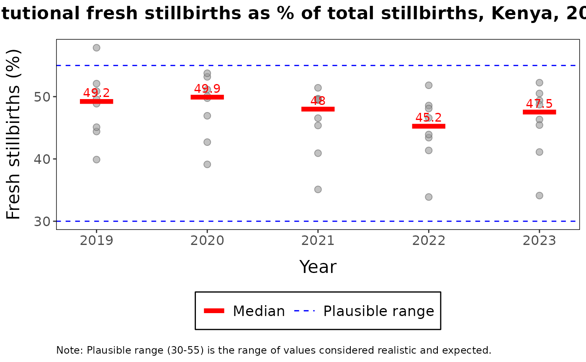
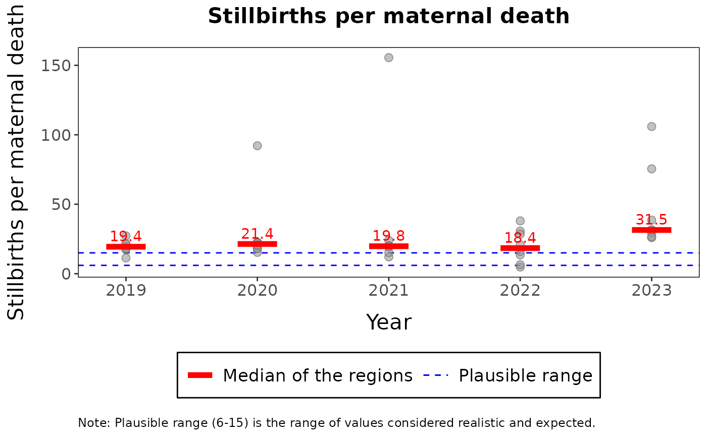

Draws one institutional mortality indicator by year, with a point for each admin level 1 unit, the median of the units in each year and the range of values considered plausible for the indicator. Use it to see whether subnational values are realistic.
Usage
plot_mortality_plausibility(
x,
indicator = c("fresh_total_sb", "ratio_md_sb", "ratio_md_nd"),
title = NULL,
y_title = NULL,
x_title = NULL,
caption = NULL,
legend_labels = NULL
)Arguments
- x
A
cd_mortality_summaryobject.- indicator
One of
"fresh_total_sb"(fresh stillbirths as a percentage of all stillbirths),"ratio_md_sb"(stillbirths per maternal death) or"ratio_md_nd"(neonatal deaths per maternal death).- title
(Optional) Custom translated title.
- y_title
(Optional) Custom translated y-axis label.
- x_title
(Optional) Custom translated x-axis label.
- caption
(Optional) Custom translated footnote.
- legend_labels
(Optional) A named list to override default legend labels (keys: 'median', 'plausible').
Value
A ggplot object. The function stops with an error when x has no subnational values
for the indicator.
Examples
cache <- load_cache_data(system.file("extdata", "kenya.xlsx", package = "cd2030.core"))
#> ℹ Loading Excel "kenya.xlsx" for parts
#> ! The following columns are empty: anc_1trimester, under5_deaths, total_deaths,
#> ipv2, measles_cases
#> ℹ Successfully loaded and cleaned data
#> ℹ Auto-detect candidates (|group|): vaccine=19, rmncah=28 -> selected rmncah
cache$set_national_estimates(list(sbr = 0.02))
cache$adjust_data()
mortality <- cache$mortality_summary
plot_mortality_plausibility(mortality, indicator = "fresh_total_sb")

plot_mortality_plausibility(mortality, indicator = "ratio_md_sb", title = "Stillbirths per maternal death",
x_title = "Year", legend_labels = list(median = "Median of the regions"))
